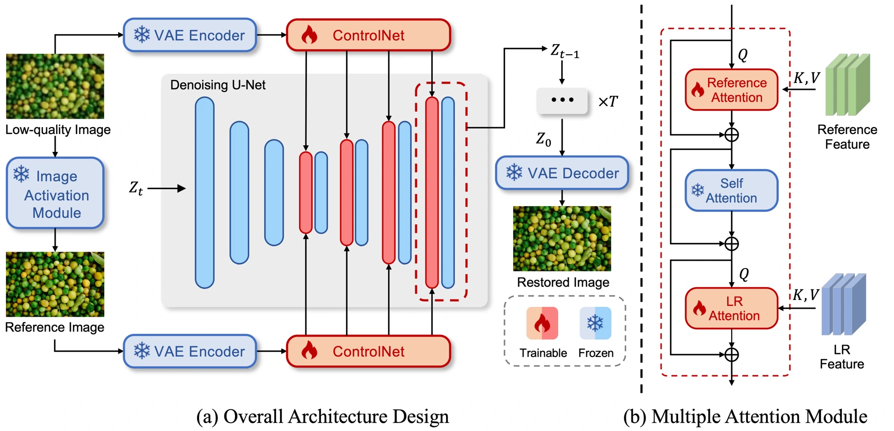
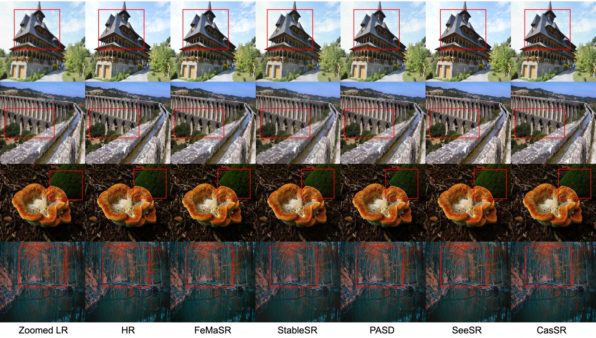

Text-to-image diffusion models provide rich visual priors, yet heavily degraded inputs can lead to lost semantics or invented content. CasSR focuses on strengthening the image information available to the generative process.
文生图扩散模型拥有丰富的视觉先验，但严重退化的输入可能造成语义丢失或生成虚假内容。CasSR 重点改善生成过程可利用的图像信息。
The proposed cascade gives the diffusion model a stronger visual starting point, making the image itself a more useful guide to what should be restored.
提出的级联流程为扩散模型提供更有力的视觉起点，让图像自身更有效地指引复原内容。
Building a better visual reference first先构建更好的视觉参考
A preliminary reference image helps extract content and reduce degradation before further restoration. A cascaded controllable diffusion model uses this reference, while a multi-attention mechanism improves how the text-to-image backbone draws on the original image.
首先生成初步参考图像，以提取内容并减轻退化；随后由级联可控扩散模型使用这一参考。多注意力机制进一步增强文生图骨干对原始图像信息的利用。
The preliminary image acts as a more informative reference, not as an unquestionable ground truth. It provides the next stage with content that is easier to condition on than the original degraded observation. The controllable diffusion process can then use the pretrained visual prior while staying connected to image evidence through attention. This is why both stages must be judged together: the first changes the evidence, and the second determines how that evidence guides synthesis.
初步图像是一份信息更充分的参考，并非不可质疑的真值。相比原始退化观测，它为后续阶段提供更易利用的内容；可控扩散在使用预训练视觉先验的同时，通过注意力与图像证据保持联系。因此两个阶段必须联合评估：前级改变证据，后级决定证据如何引导合成。
{kind=link}

Testing what the reference contributes检验参考图像的作用
The evaluation compares GAN-based and diffusion-based methods on DIV2K validation, DRealSR and RealSR. Reference-based perceptual distances and no-reference quality measures are reported together, supplemented by detailed visual comparisons. The cascade is designed to supply a cleaner reference before generation, so examples that retain object boundaries and small identifying details are particularly informative for understanding where the mechanism helps.
评测在 DIV2K 验证集、DRealSR、RealSR 上比较 GAN 与扩散方法，同时报告全参考感知距离和无参考质量指标，并给出细节可视化。级联流程先提供更清晰的参考，再进行生成，因此物体边界与微小识别细节的保留，尤其有助于理解方法在哪些地方起作用。
Where the cascade preserves more detail级联在哪些地方保留更多细节
On the DIV2K validation set, the paper reports relative improvements of 3.82% in MUSIQ and 7.05% in MANIQA over the next-best compared method. Visual comparisons show better preservation of details such as a penguin’s eye and wing boundaries. Performance varies across DRealSR and RealSR, so the reported perceptual gains should be read alongside the individual dataset results.
在 DIV2K 验证集上，论文报告 MUSIQ、MANIQA 分别比对比方法中的次优结果相对提升 3.82% 和 7.05%。可视化展示了企鹅眼睛与翅膀边界等细节的改善。DRealSR 与 RealSR 上的表现有所不同，感知指标收益应结合各数据集结果理解。
{kind=link}

A generative prior needs a reliable anchor生成先验需要可靠锚点
The cascade makes the condition itself an object of restoration. Instead of asking a powerful prior to solve every ambiguity at once, it first tries to improve the evidence the prior receives. That structure is useful, but errors from the preliminary stage may propagate. Assessing a final image should therefore include both attractive detail and consistency with the original observation.
级联方法将条件图像本身也作为恢复对象。它不要求强生成先验一次解决所有歧义，而是先改善先验接收到的证据。这种结构有价值，但前级错误也可能传递，因此评估最终图像时应同时检查细节观感与原始观测的一致性。
Paper & authors论文与作者
CasSR: Activating Image Power for Real-World Image Super-Resolution ↗
Cite this work
@misc{chen2024cassractivatingimagepower,
title = {CasSR: Activating Image Power for Real-World Image Super-Resolution},
author = {Haolan Chen
and Jinhua Hao
and Kai Zhao
and Kun Yuan
and Ming Sun
and Chao Zhou
and Wei Hu},
year = {2024},
eprint = {2403.11451},
archivePrefix = {arXiv},
primaryClass = {cs.CV},
url = {https://arxiv.org/abs/2403.11451}
}